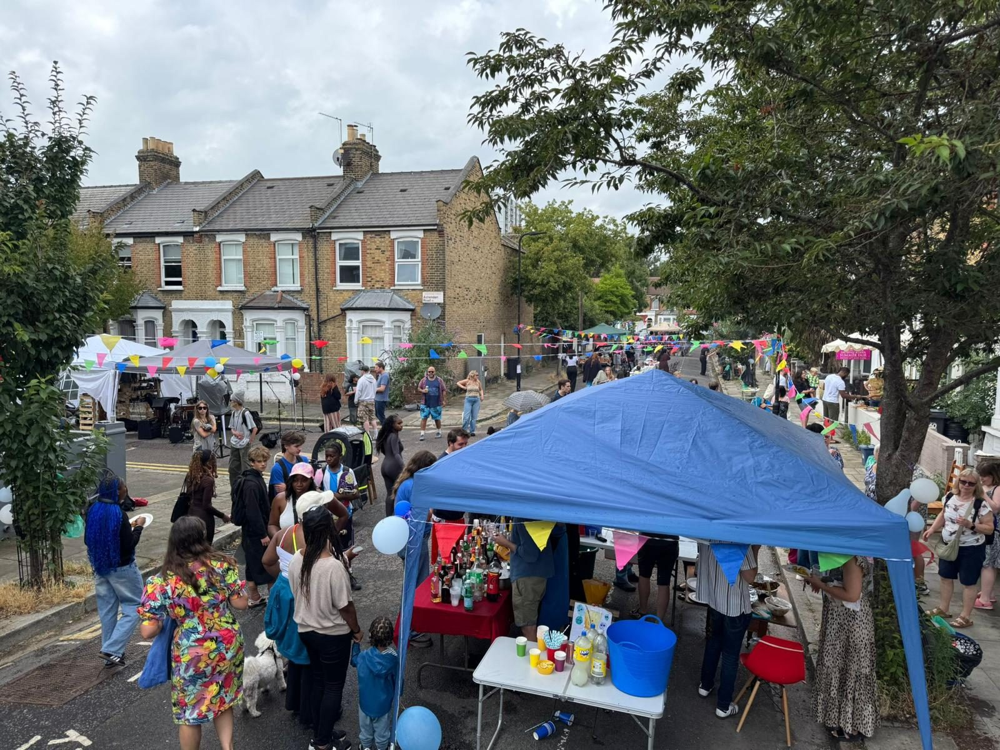

Where our work is now, and the stories of the grassroots leaders we back, in their own words.

These figures describe what we're offering now, not measured outcomes. We'll share programme outcomes here once programmes have run.
A phone call from an old colleague running a local boxing club, and what his quiet exhaustion reveals about grassroots leaders everywhere.
Read the Full Story“Adrian is not running a hobby. He is holding a line in our community.”
From When Good Leaders Feel Like They're Carrying It Alone, February 2026
We're gathering stories from the communities and leaders we work with, in their own words.
Real examples of Community Fabric training and tools in action, told by the people using them.
Press coverage and mentions of Community Fabric CIC's work will appear here as it's published.
Our latest thinking on funding, leadership and community organising.
Visit the Blog →